Rosario concierto
Sanación interior a través de música, rosario y oración viva.
Música, rosario y oración para abrir un espacio de encuentro, sanación interior y restauración familiar.
Testimonios de consuelo, paz y reconciliación.
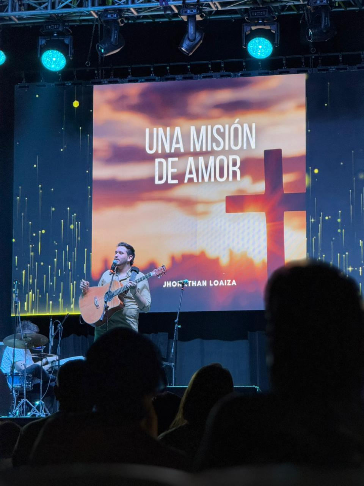
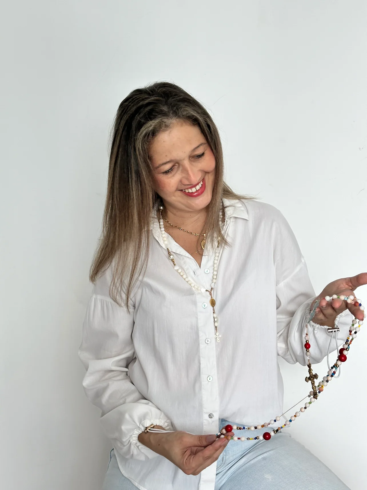
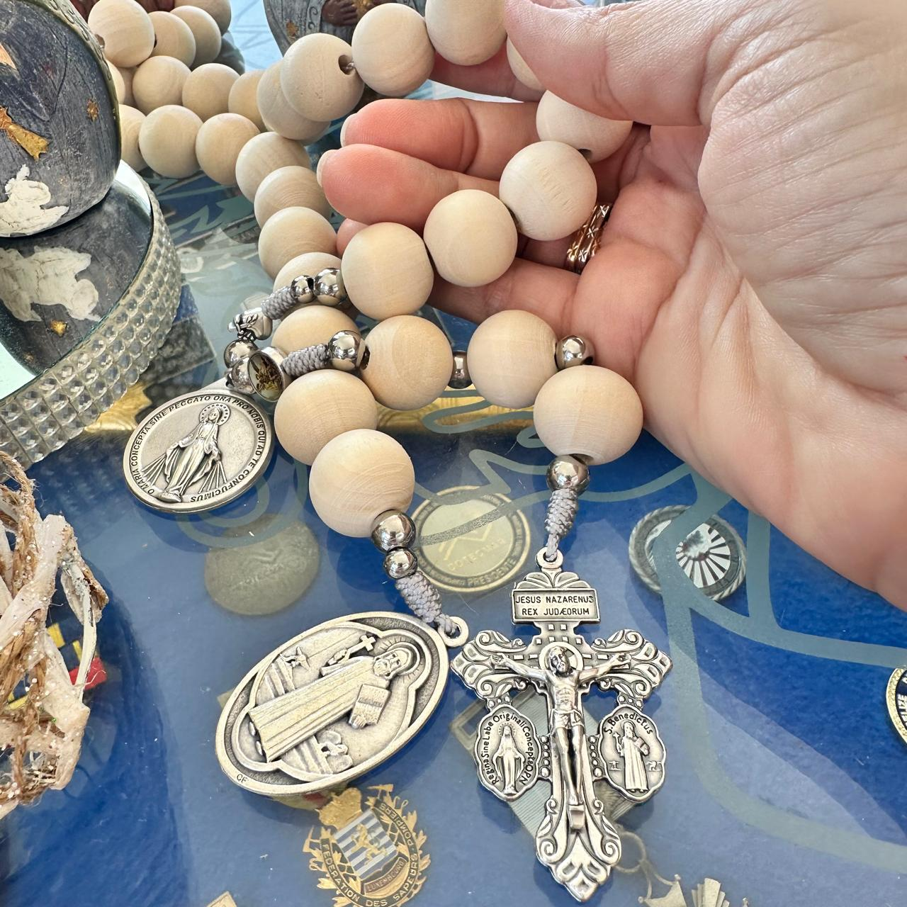
Qué es Letanías
Letanías acompaña la fe con belleza y vida diaria.
Un proyecto católico que acompaña con contenido, comunidad, oración y signos devocionales.
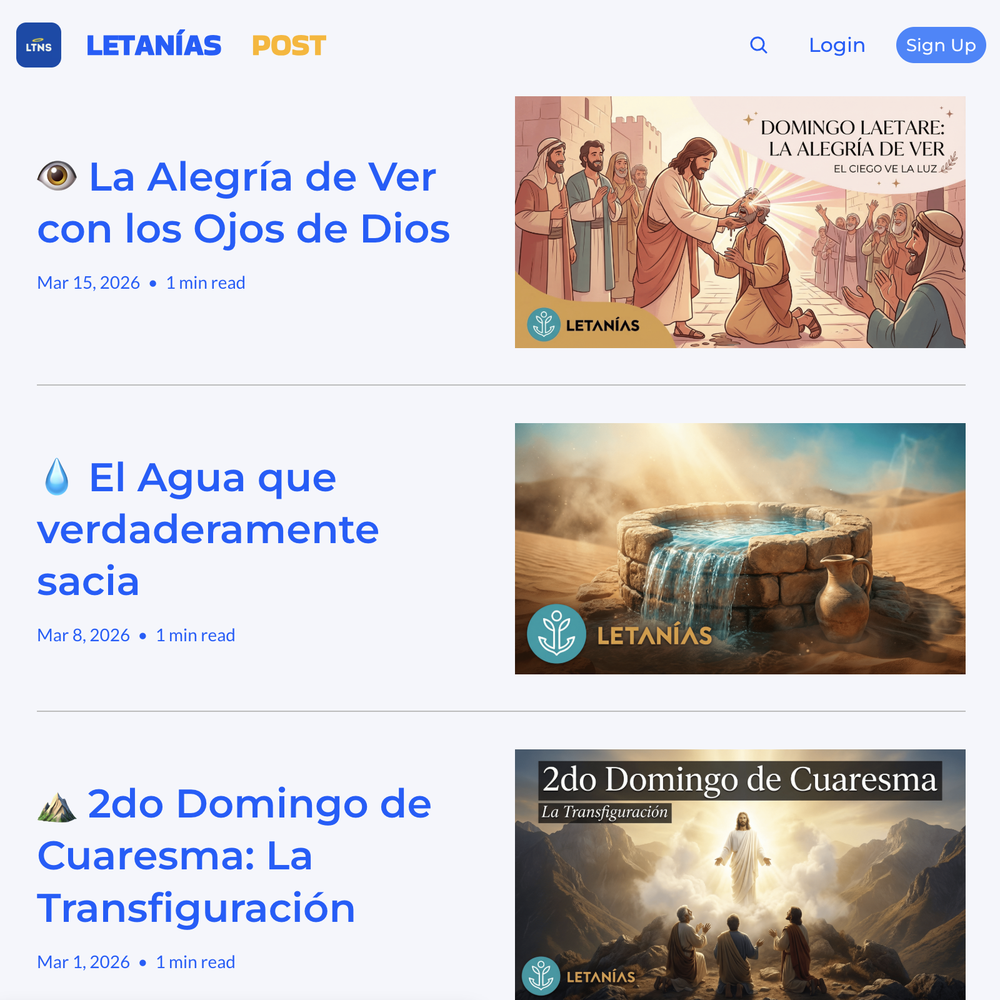
Hoy se expresa en
newsletter, evangelio diario, comunidad activa, talleres, consagraciones y rosarios vividos en los tiempos fuertes del año.
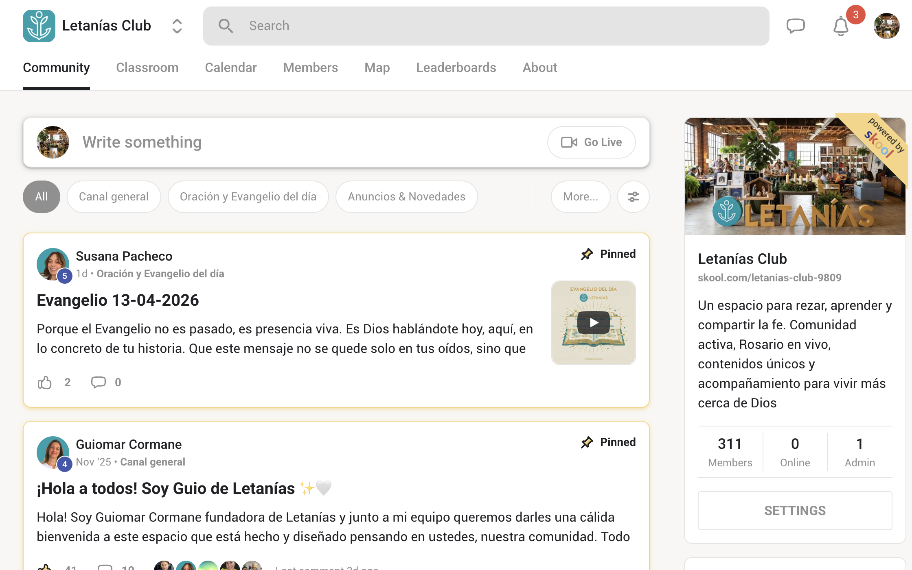
Qué se ve hoy en Letanías
Música, newsletter, evangelio diario y una comunidad que activa la fe durante todo el año.
Letanías Music
Canciones, álbumes y piezas pensadas para oración, calendario litúrgico, retiros y acompañamiento espiritual.
Newsletter
Contenido editorial que acompaña, explica y profundiza los tiempos litúrgicos y la vida espiritual.
Evangelio diario
Producción sostenida de videos y piezas de evangelio para acompañar a la comunidad día tras día.
Comunidad Letanías Club
Hoy la comunidad sostiene club de lectura, rosarios y espacios de seguimiento para quienes quieren caminar más de cerca.
Talleres y consagraciones
Experiencias guiadas que incluyen talleres y consagraciones, especialmente de San José, para aterrizar la oración en procesos concretos.
Tiempos fuertes y rosarios
Semana Santa, rosarios comunitarios y otras actividades fuertes se articulan con recursos devocionales y signos concretos de Letanías.
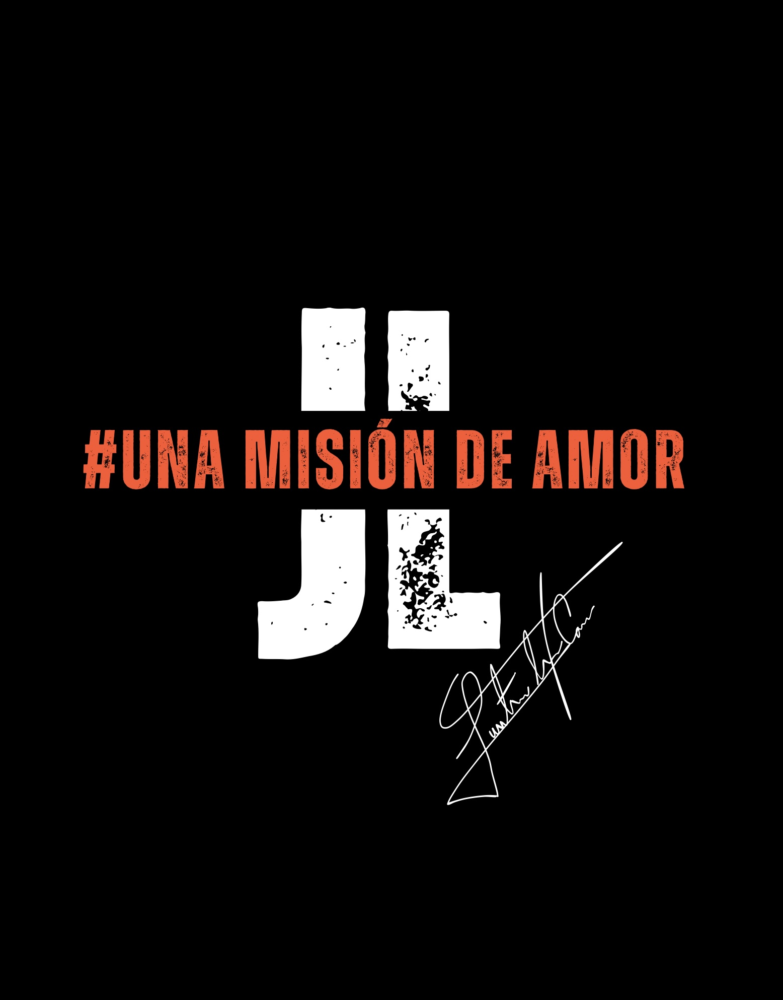
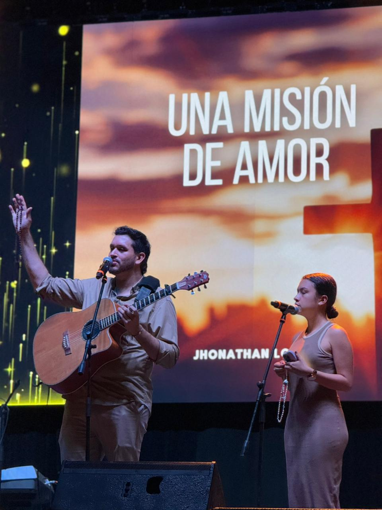
Una colaboración completa
Música, rosario, acompañamiento y continuidad en comunidad.
Se integran Rosario Concierto, intervención de Guiomar, oración compartida y continuidad posterior.
- Rosario meditado con música en vivo y oración guiada.
- Intervención cercana de Guiomar dentro de la experiencia.
- Continuidad posterior en comunidad, contenido y acompañamiento.
Galería de eventos
Así se ve Una Misión de Amor en vivo.
Un archivo visual de encuentros y escenarios donde la música de Jhonathan Loaiza convoca, acompaña y abre espacio para la oración.
Otro formato conjunto
Retiros periódicos de Letanías y Una Misión de Amor.
Un formato distinto al Rosario Concierto: más pausado, con mayor profundidad espiritual y tiempos extendidos de oración, enseñanza y acompañamiento.
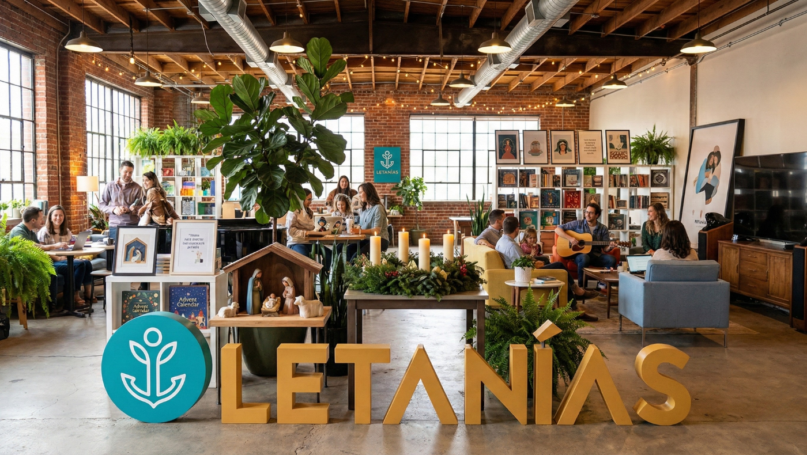
Jornada de retiro
Puede vivirse como media jornada, día completo o retiro de fin de semana, según el contexto.
Oración y enseñanza
Meditaciones, música, momentos de silencio, espacios de escucha y acompañamiento espiritual.
Proceso más amplio
Permite trabajar temas de sanación interior, reconciliación y vida espiritual con más tiempo.
Continuidad posterior
Puede enlazarse con comunidad, recursos y seguimiento para sostener el fruto del retiro.
De qué va el evento
No es un recital ni una charla suelta. Es una experiencia de encuentro con Dios.
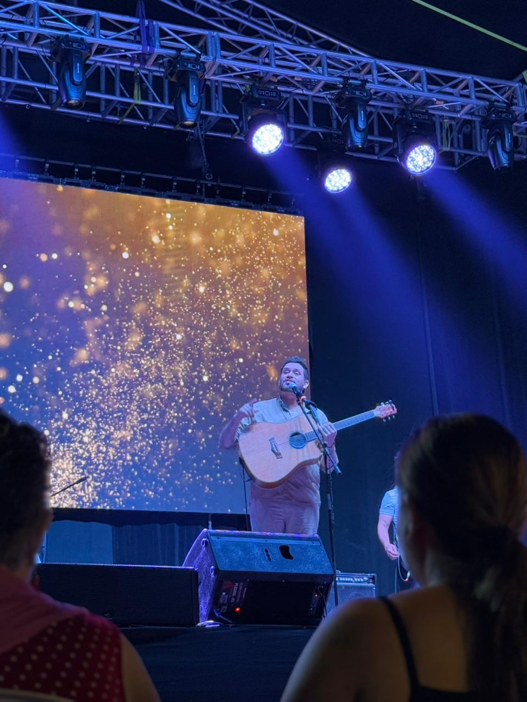
Alabanza y música católica
Canciones en vivo para disponer el corazón y entrar en clima de oración.
Rosario meditado y comunitario
El rosario se vive como experiencia espiritual, con peticiones y participación de familias.
Intervención de Guiomar
Guiomar acompaña con peticiones, cercanía y pequeñas meditaciones.
Sanación interior
La oración puede enfocarse en sanación interior, reconciliación o sanación de recuerdos.
Sanación y liberación familiar
También se ora por vínculos, memorias, reconciliación y restauración familiar.
Adoración y cierre según el contexto
Si el contexto lo permite, puede integrarse adoración al Santísimo.
Sanación interior
Un espacio para tocar heridas, recuerdos, vínculos y esperanza.
Consuelo, paz, reconciliación y libertad interior.
Quienes han participado en este tipo de encuentros han compartido testimonios de consuelo, paz, reconciliación y libertad interior.
Sanación interior
Heridas afectivas, recuerdos, cansancio espiritual y búsquedas profundas.
Liberación familiar
Oración por la historia familiar, la reconciliación y la restauración de vínculos.
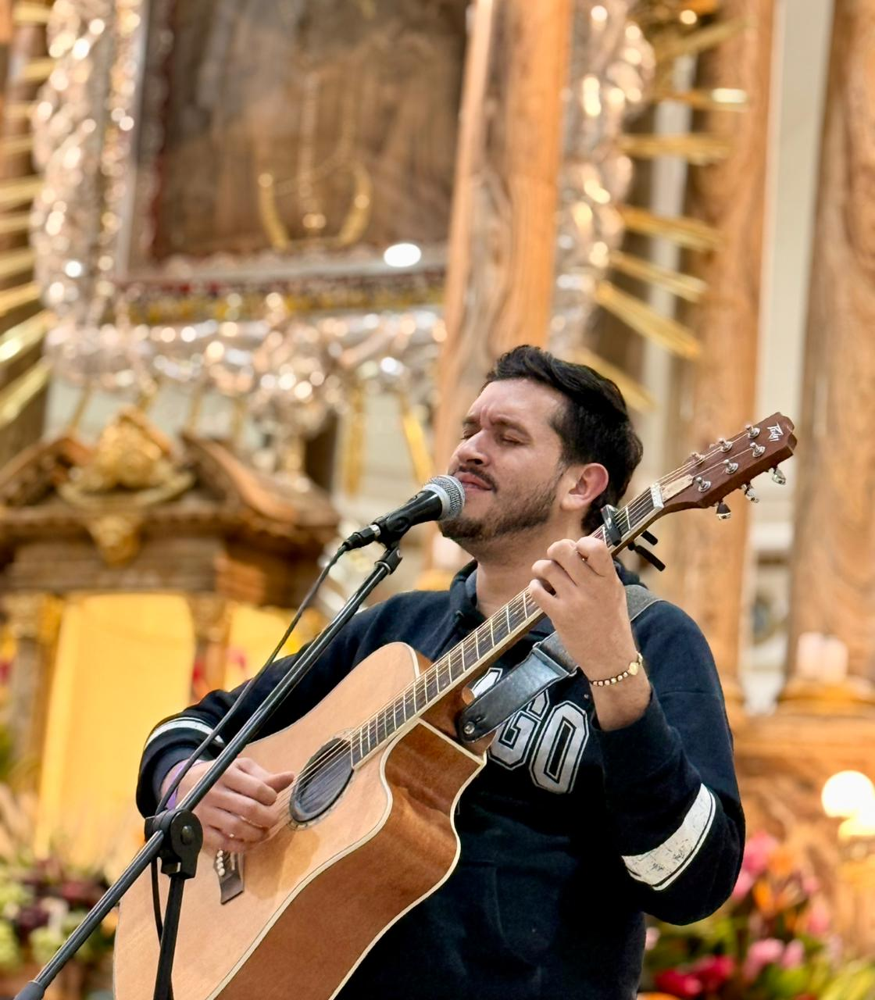
Contextos donde puede vivirse
Un formato adaptable a contextos pastorales, educativos y comunitarios.
Espacios posibles
Flexible en forma, claro en intención
Puede realizarse en iglesia, auditorio, teatro o salón parroquial sin perder el foco espiritual. Funciona especialmente bien donde una comunidad necesita renovar la vida de oración, reunir familias o abrir un espacio de sanación.
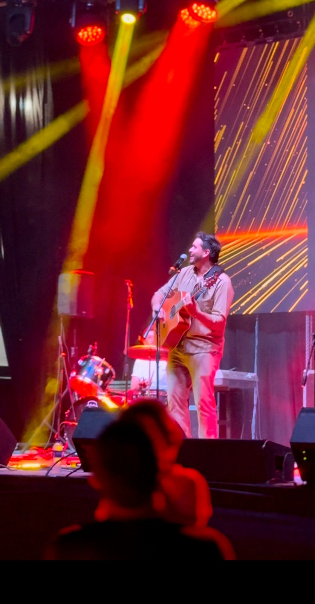
Una colaboración completa
El encuentro no termina cuando baja la música.
Letanías permite que la experiencia presencial tenga continuidad a través de comunidad, contenido y acompañamiento.
Convocatoria y preparación
Comunicación clara de lo que se va a vivir, con videos, flyer, redes y preparación pastoral.
Experiencia artística y espiritual
Jhonathan guía musicalmente el Rosario Concierto y Guiomar interviene dentro de la sesión; se integran peticiones y participación de familias.
Seguimiento y comunidad
Newsletter, evangelio diario, club de lectura, consagraciones de San José, rosarios comunitarios y tiempos fuertes como Semana Santa ayudan a sostener el fruto.
Una experiencia que permanece
Evangelización, experiencia mariana, acompañamiento y continuidad pastoral en un mismo camino.
Letanías y Una Misión de Amor
Dos presencias al servicio de un mismo camino de oración.
Guiomar acompaña con cercanía y guía espiritual. Jhonathan Loaiza sirve desde la música y el formato misionero de Una Misión de Amor.
Un camino de encuentro, sanación y esperanza.
Una experiencia donde la música, el rosario y la oración ayuden a que las personas vuelvan a casa con más paz, más fe y más esperanza.